China Employee Termination in 2026: Pulse Risk-Radar Playbook Brief for Foreign Employers
Key takeaways
- Foreign employers in China can improve termination outcomes by managing cases with a live risk radar, not a static checklist.
- The highest-impact radar signals are route-evidence mismatch, payroll/tax drift, and script inconsistency before employee communication.
- A severity model (Green / Amber / Red) helps teams intervene earlier and reduce expensive late-stage resets.
- The best operational sequence remains: legal context alignment first, then payroll lock, then communication lock, then closure resilience checks.
- This brief is Pulse-style and impact-first; legal depth is included as a secondary appendix.
What changed and why this matters now
Many cross-border teams notice risk only when a case is already in trouble—usually after communication has started. By that point, corrections are slower, costlier, and harder to explain internally. A risk-radar model shifts attention earlier, where interventions are cheaper and more effective.
This run rotates into a risk-radar playbook format. Instead of organizing by case type or route branch, it organizes by warning signals and response speed. The result is a practical operating view for foreign leaders who need immediate prioritization across multiple active cases.
Plain-language legal context first
China termination handling is route-sensitive and evidence-sensitive. In practical terms, that means your legal basis, factual record, payout assumptions, and manager communication should all tell the same story. If one element changes, all dependent elements should be updated before any employee-facing action.
National law sets core principles, but local implementation differences can materially affect outcome risk. For foreign employers, this makes local interpretation checks a core control, not an optional legal footnote.
Pulse risk radar: signals that matter most
Radar Signal 1 — Route-evidence divergence
What it looks like: route memo is stable, but new facts weaken or complicate core assumptions.
Severity guide:
- Green: no unresolved contradictions.
- Amber: minor contradictions with clear remediation path.
- Red: material contradiction undermines route confidence.
Immediate action: stop progression at legal gate when signal is Red; run evidence reconciliation sprint.
Radar Signal 2 — Payroll/IIT drift
What it looks like: multiple worksheet versions, unresolved payout components, or unclear tax assumptions.
Severity guide:
- Green: one locked worksheet with approval trail.
- Amber: stable worksheet, but one open tax interpretation point.
- Red: parallel worksheet versions or unresolved core payout logic.
Immediate action: freeze communication until payroll lock returns to Green.
Radar Signal 3 — Communication script lag
What it looks like: scripts or talking points do not reflect latest route/payout assumptions.
Severity guide:
- Green: scripts synced, spokesperson briefed, escalation language prepared.
- Amber: scripts mostly current but missing latest edits.
- Red: scripts materially conflict with approved assumptions.
Immediate action: issue script refresh order and block outbound meetings while Red.
Radar Signal 4 — Closure resilience gap
What it looks like: case appears complete but cannot be reconstructed quickly from one evidence index.
Severity guide:
- Green: retrieval test design complete and ownership clear.
- Amber: archive mostly organized but missing standard index links.
- Red: fragmented records and unclear final record set.
Immediate action: reopen closure workflow; complete retrieval-test requirement before final close.
Signal-to-action playbook for foreign teams
Use one rule across all signals: Red stops communication, Amber slows and remediates, Green proceeds. This clarity helps distributed teams avoid internal confusion when pressure is high.
In weekly operations calls, start with Red signals first, then highest-cost Amber signals. Avoid discussing Green signals unless there is trend deterioration. This keeps leadership attention focused and reduces decision fatigue.
Practical scenarios
Scenario A: Legal looks ready, radar says Amber
The legal team believes route confidence is acceptable, but contradiction logs show unresolved sequence gaps.
Radar read: Signal 1 = Amber.
Action: allocate 24-hour evidence reconciliation window; hold communication until Amber clears.
Scenario B: Payroll shifts after internal prep call
HR and managers prepare for communication, but payroll updates worksheet assumptions late.
Radar read: Signal 2 = Red, Signal 3 = Amber.
Action: immediate freeze on outreach, consolidate worksheet ownership, refresh scripts after lock.
Scenario C: Closure appears complete but retrieval fails
A post-case question cannot be answered quickly due to fragmented records.
Radar read: Signal 4 = Red.
Action: execute closure remediation sprint and run retrieval test before final status confirmation.
Daily operations SOP (role ownership)
HR case owner: monitors all four radar signals daily during active execution, updates severity status, and coordinates remediation owners.
Legal/compliance owner: owns Signal 1 quality and local interpretation notes; approves route adjustments and escalation thresholds.
Payroll owner: owns Signal 2 controls, including worksheet version governance, IIT assumptions, and lock timestamps.
Manager owner: owns Signal 3 behavior by following current scripts, completing briefings, and escalating deviations immediately.
Vendor/EOR owner: supports local execution alignment, evidence hygiene, and closure resilience standards.
Document checklist with operational deadlines
- Pre-route confirmation: route memo, chronology ledger, contradiction log, locality note.
- Pre-communication: final worksheet, IIT assumption memo, approval record, script pack.
- Execution day: payment proof checklist, acknowledgment templates, incident fallback language.
- Post-execution: closure memo, archive index, retrieval-test record, lessons-learned note.
Exception handling playbook
- Red signal detected inside 24 hours of communication: auto-escalate to leadership, pause outbound communication, and assign single accountable owner.
- Amber signal persisting >48 hours: convert to structured remediation plan with deadline and checkpoint review.
- Repeated Red on same signal family: trigger root-cause review and process fix before new cases enter that lane.
- Local interpretation uncertainty unresolved: keep legal signal at Amber/Red until local advice is logged.
System implementation notes
In workflow tooling, add mandatory radar fields (Signal 1-4 severity, owner, deadline, status history). Configure hard dependency rules so communication tasks cannot open while Signal 1-3 are Red. In payroll systems, enforce immutable worksheet version IDs and single source-of-truth ownership.
Add dashboard metrics for leadership: Red signal count by week, average Amber aging time, post-communication correction rate, and retrieval-test pass rate. Over time, this shows whether controls are improving or just generating documentation noise.
Common mistakes and prevention
- Mistake: tracking signals but not linking them to stop/go actions.
Prevention: codify Red=Stop, Amber=Remediate, Green=Proceed.
- Mistake: treating payroll drift as “minor” until late stage.
Prevention: enforce no-communication-until-Signal-2-Green policy.
- Mistake: script updates outside controlled workflow.
Prevention: script version control tied to route and worksheet versions.
- Mistake: closing cases without resilience checks.
Prevention: mandatory retrieval test before closure sign-off.
What to do now
Deploy the four-signal radar on all active China termination cases this week. Assign one owner per signal and review Red/Amber items in a short daily huddle. Keep the meeting focused: current severity, blocker, owner, deadline, and escalation need.
Then set a weekly leadership view with only three lines: number of Red events, number of post-communication corrections, and closure retrieval pass rate. This creates a simple discipline loop and makes progress measurable.
What to watch next
- Whether Signal 2 (payroll/IIT drift) remains the dominant Red source.
- Whether script lag events rise during high-pressure periods.
- Whether closure resilience improves after retrieval tests become mandatory.
FAQ
1) Why use a risk radar instead of a standard checklist?
A radar captures changing risk in real time and supports faster intervention.
2) Can we proceed with Amber signals?
Sometimes, but not when Amber affects communication integrity or legal route confidence.
3) Which signal is most expensive when ignored?
Payroll/IIT Red signals often create the costliest late-stage resets.
4) How often should radar severity be updated?
Daily during active cases, and immediately after any material fact change.
5) Is this legal advice?
No. It is an operations-focused control framework and not legal or tax advice.
6) What KPI usually improves first?
Post-communication correction rate is often the earliest visible improvement marker.
Legal depth appendix (secondary)
This brief is anchored in the PRC Labor Contract Law baseline and complemented by practitioner and payroll references used by multinational employers. It provides operational guidance, not jurisdiction-specific legal advice. Real outcomes remain sensitive to case facts, city-level interpretation, and documentation quality.
For high-impact cases, employers should validate route choices, payout treatment, and communication language with qualified local legal and tax advisors.
Soft CTA
If your team needs compliance-first support for China employee termination, China-Payroll.com can help implement risk-radar governance, payroll lock controls, and defensible closure workflows.
Disclaimer
This content is informational only and does not constitute legal, tax, or employment advice.
Sources
- National People’s Congress of China, Labor Contract Law of the PRC (English), accessed 2026-03-07: http://www.npc.gov.cn/zgrdw/englishnpc/Law/2007-12/13/content_1384064.htm
- ICLG, Employment & Labour Laws and Regulations: China, accessed 2026-03-07: https://iclg.com/practice-areas/employment-and-labour-laws-and-regulations/china
- Littler, Key Recent Developments in China’s Employment Law, accessed 2026-03-07: https://www.littler.com/news-analysis/asap/key-recent-developments-chinas-employment-law-china-us-comparative-perspective
- PwC Tax Summaries, China Individual — Taxes on Personal Income, accessed 2026-03-07: https://taxsummaries.pwc.com/peoples-republic-of-china/individual/taxes-on-personal-income
- China Briefing, China Human Resources and Payroll Guide, accessed 2026-03-07: https://www.china-briefing.com/doing-business-guide/china/human-resources-and-payroll
Need local employment support in China?
If you need a compliance-first partner for hiring, payroll, and risk controls in China, China-Payroll.com can help evaluate the right setup.
Image Prompt Pack
Create a 16:9 hero image for article title: 'China Employee Termination in 2026: Pulse Risk-Radar Playbook Brief for Foreign Employers'. Scene: global operations team evaluating workforce model options for China market entry. Include motifs: decision matrix, o…